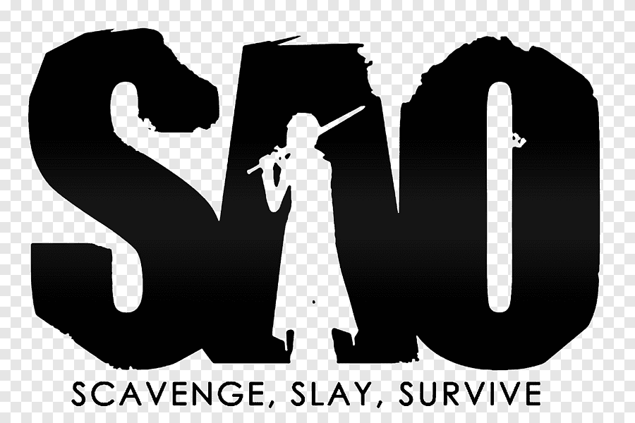

Sword Art Online - SAO
Historia de SAO
El personaje principal es Kasuto Kirigaya alias Kirito.
SAO es un videojuego muy esperado por los fanaticos de los videojuegos.
SAO tiene una versión Beta, por lo cual solo los mejores jugadores tuvieron acceso. Se les conoce como Beta Tester.
Sin embargo existe un termino que se da los jugadores que tienen mayor conocimiento del juego y fueron Beta Tester, se les conoce como Beater

El termino Beater es una combinación entre Beta y Cheater 💀
Compañeros de Kirito
Asuna
Klain
Silika
Shinon
El único jugador que tiene el termino de Beater es Kazuto Kirigaya alias Kirito
<<<<<<< Updated upstreamAsuna es la esposa de kirito y tiene una hija llamada Yui
=======Kirito es conocido como el espadachín negro y que usa la habilidad nitoriu o dos espadas
>>>>>>> Stashed changes